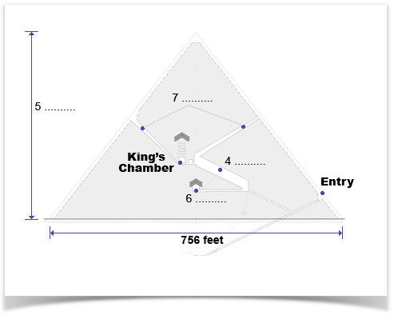

You should spend about 20 minutes on questions 1-13, which are based on Reading Passage 89
Ancient Egypt
The people of ancient Egypt emerged as one of the first Western civilisations. Sustained by the River Nile and protected by vast deserts, the Egyptians lived in comparative security, prosperity and peace far thousands of years. When such conditions exist, the civilisation and its arts usually flourish. To this day, many of the Egyptian artistic creations display the wealth, splendour and talent of this great civilisation.
Ancient Egypt has been called a land of temples and tombs, and for centuries people have been filled with wonder at the ingenuity of the Egyptians, whose impressive works have withstood the ravages of time so well. Had it not been for the long-lasting nature of their monuments and carved inscriptions in the form of hieroglyphics’, much evidence of their activities would have vanished from ail historical records. In about 3000 BC, Upper and Lower Egypt were united under the first pharaoh, and generally from that time until the invasion by Alexander the Great in 332 BC, Egypt prospered as a nation of skilful craftsmen and artists.
The Egyptians were an industrious, highly civilised and deeply religious people, who obediently accepted the supreme authority of their pharaohs. The people were content to serve and work for the state in return for a secure livelihood. They considered this earthly life to be a segment in a great cycle, at the end of which everything would be returned to its original form. The richer and more important the person, the more careful and elaborate would be his or her burial, and the stronger and safer the tomb in which they would be buried.
The burial of the dead in the ground was not considered sufficiently safe for kings, queens and court officials, so sunken, sealed tombs were ingeniously constructed to protect personal treasures, food and instructions for the safe conduct of the soul after death. The design of these tombs developed into the stepped pyramid, and finally into the square pyramid that we know today.
There are about 80 ancient pyramids in Egypt. The Great Pyramid at Gizeh, which King Cheops built as his tomb 5000 years ago, holds most interest. It stands with two other pyramids on a slight rise overlooking the River Nile. At the centre of the pyramid is the King’s Chamber and leading down from there is a long narrow area known as the Grand Gallery. The pyramid covers 13 acres and contains 2,300,000 blocks of limestone, each weighing an average of 1.5 tons. Its pyramidal form has a perfectly square base with sides of 756 feet and a height of 481 feet. Situated directly below the King’s Chamber is the Queen’s Chamber and there are two air channels leading upwards from the centre of the pyramid to the outside.
Originally the exterior was covered in highly polished limestone slabs, all of which have been stolen over the years. It is estimated that a total of 100,000 men laboured for 20 years to build this gigantic structure, and although architecturally unimportant in design, it has aroused the curiosity of millions of people because of the uncanny accuracy of its measurements and proportions. It reveals the remarkable ingenuity and the great organising ability of the ancient Egyptians.
Near these pyramids stands the Great Sphinx, the origin and purpose of which constitute one of the world’s most famous puzzles. Shaped from an outcrop of stone in the form of a human-headed lion, the face is possibly a portrait of King Khafra, the son of Cheops, who was buried in the second largest pyramid. The Sphinx is one of the biggest statues ever made.
The Egyptian people showed reverence towards natural objects such as the lotus flower, the scarab beetle, the falcon, the lion, the sun and the River Nile. AII these subjects and many more were used symbolically and conventionally as motifs in low-relief carving and painting. It was the custom of the Egyptians to depict the various parts of the human figure, usually in the most characteristic positions. The head was shown in profile except for the eye, which was represented from the front, the shoulders and a portion of the arms wert portrayed from the front, while the hips and legs were side views. Wall decoration showed little or no attempt to indicate depth or perspective, except by placing distant objects above near things. It was essentially two-dimensional, and relative size indicated the status of the person, so the pharaoh was the largest figure in the composition.
Egyptian art is characterised by a passion for permanence, a desire to impress by size, and a determination to make each item serve its function without much regard for the whole. It is obvious that art among these people reached a very high level and the strong influence of Egyptian art can be seen in the work of nearby civilisations.
The fortunate discovery and subsequent deciphering in 1822 of the Rosetta Stone, which showed the same laws inscribed both in Egyptian hieroglyphics and the Egyptian demotic, or popular version of their language, as well as the Greek language, eventually gave the key to the meaning of Egyptian inscriptions, and therefore the significance of much Egyptian art.
Questions 1-3
Complete the sentences below.
Choose NO MORE THAN THREE WORDS from the passage for each answer.
Write your answers in boxes 1-3 on your answer sheet.
1. Security and peace are two …………………… that are necessary for a civilisation to be successful.
2. Ancient Egyptians worked as both ……………………. .
3. Ordinary Egyptians expected to receive …………………… for their hard work.
Questions 4-7
Label the diagram below.
Choose NO MORE THAN THREE WORDS AND/OR NUMBERS from the passage for each answer.
Write your answers in boxes 4-7 on your answer sheet.

Questions 8-12
Do the following statements agree with the information given in the Reading Passage 1.
In boxes 8-12 on your answer sheet, write
TRUE if the statement agrees with the information
FALSE if the statement contradicts the information
NOT GIVEN iif there is no information on this
8. The surface of the Great Pyramid is covered in polished limestone slabs.
9. King Khafra died before King Cheops.
10. Egyptian carvings were often based on things found in nature.
11. Important characters in Egyptian carvings were bigger than less important characters.
12. Egyptian art was greatly influenced by the art of neighbouring cultures.
Question 13
Choose the correct letter A, B, C or D.
Write the correct letter in box 13 on your answer sheet.
The writer’s aim in this passage is to —
A. describe the construction methods of the pyramids.
B. explain the beliefs of the ancient Egyptians.
C. offer an interpretation of Egyptian art and sculpture.
D. provide an overview of early Egyptian society.
Answer:
1. conditions
2. craftsmen and artists / artists and craftsmen
3. a secure livelihood
4. (the) Grand Gallery
5. 481 feet
6. (the) Queen’s Chamber
7. (the) air channel(s)
8. FALSE
9. NOT GIVEN
10. TRUE
11. TRUE
12. FALSE
13. D